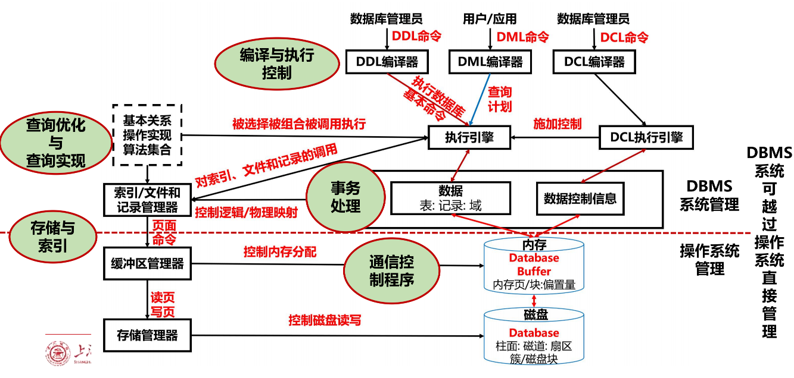

数据库技术：期末复习
Last updated on June 21, 2026 pm
本文为 SJTU-CS3321 数据库技术课程的期末复习.
第一章 数据库系统概论
1. 数据库系统概述
-
基本概念：了解关系即可（包含的范围越来越大）
- 数据(Data)：数据库中存储的基本对象
- 数据库(DataBase, DB)：长期储存在计算机内、有组织、可共享的大量数据集合
- 数据库管理系统 (DataBase Management System, DBMS)：位于用户与操作系统之间的一层数据管理软件
- 数据库系统 (DataBase System, DBS)：在计算机系统中引入数据库和 DBMS 后的系统构成
-
DBMS 的主要功能：理解即可
- 数据定义功能：
- 提供数据定义语言(Data Definition Language, DDL)
- 定义数据库中的数据对象的组成与结构
- 数据组织、存储、管理功能：
- 文件结构和存取方式
- 数据如何联系
- 提高存储空间利用率、方便存取
- 数据操纵功能：
- 提供数据操纵语言(Data Manipulation Language, DML)
- 操纵数据实现基本操作，如查询、插入、删除和修改
- 数据库的事务管理和运行管理：
- 保证数据的安全性、完整性
- 多用户对数据的并发使用
- 发生故障后的系统恢复
- 数据库的建立和维护功能：
- 数据库数据批量装载和转储
- 介质故障恢复
- 数据库的重组织
- 性能监视、分析
- 其他功能：
- 数据库管理系统与网络中其它软件系统的通信
- 数据库管理系统各系统之间的数据转换
- 异构数据库之间的互访和互操作

- 数据定义功能：
-
数据库系统的特点：
- 数据的结构化：数据的结构用数据模型描述，无需程序定义和解释
- 数据的独立性：
- 物理独立性：用户的应用程序与存储在物理磁盘上的数据库中数据是相互独立的，即当数据的物理存储改变了，应用程序不用改变
- 逻辑独立性：用户的应用程序与数据库的逻辑结构是相互独立的，即数据的逻辑结构改变了，用户程序也可以不变
- 数据的高共享性：数据面向整个系统，可以被多个用户、多个应用共享使用
- 数据由 DBMS 统一管理和控制：数据的安全性保护、数据的完整性检查、并发控制、数据库恢复
2. 数据模型
-
E-R 模型：用 E-R 图来描述现实世界的概念模型
- 实体型：用矩形表示，矩形框内写明实体名
- 属性：用椭圆形表示，并用无向边将其与相应的实体连接起来
- 联系：用菱形表示，菱形框内写明联系名，并用无向边分别与有关实体连接起来，同时在无向边旁标上联系的类型（1:1、1:n 或 m:n）
-
联系的属性：用无向边与该联系连起来
-
两个实体型之间的联系：
- 一对一联系：如果对于实体集 中的每一个实体，实体集 中至多有一个实体与之联系，反之亦然，则称实体集 与实体集 具有一对一联系，记为
- 一对多联系：如果对于实体集 中的每一个实体，实体集 中有 个实体 与之联系，反之，对于实体集 中的每一个实体，实体集 中至多只有一个实体与之联系，则称实体集 与实体集 有一对多联系，记为
- 多对多联系：如果对于实体集 中的每一个实体，实体集 中有 个实体 与之联系，反之，对于实体集 中的每一个实体，实体集 中也有 个实体 与之联系，则称实体集 与实体 具有多对多联系，记为
-
多个实体型之间的联系：
- 一对多联系：若实体型 存在联系，对于实体型 （）中的给定实体，最多只和 中的一个实体相联系，则我们说 与 之间的联系是一对多的
- 多对多联系、一对一联系
-
同一实体集内各实体间的联系：一对多联系、一对一联系、多对多联系
-
-
数据模型的三要素
- 数据结构：对系统静态特性的描述
- 内容：数据库的组成对象及对象之间的联系
- 数据操作：对系统动态特性的描述
- 内容：对数据库中各种对象的实例允许执行的操作的集合，包括操作及有关的操作规则
- 数据的完整性约束条件：一组完整性规则的集合
- 完整性规则：给定的数据模型中数据及其联系所具有的制约和储存规则
- 数据结构：对系统静态特性的描述
3. 数据库系统结构

- 三级模式与二级映象：
- 三级模式：对数据的三个抽象级别
- 模式：数据库中全体数据的逻辑结构和特征的描述，是数据库模式结构的中心(首先确定)
- 独立于数据库的其它层次，一个应用数据库只有一个模式
- 外模式：局部数据的逻辑结构和特征的描述
- 面向具体的应用程序，定义在逻辑模式之上，但独立于存储模式和存储设备
- 模式与外模式、外模式与应用的关系都是一对多
- 内模式：数据物理结构和存储方式的描述
- 依赖于全局逻辑结构，但独立于外模式，也独立于具体的存储设备
- 一个数据库只有一个内模式
- 模式：数据库中全体数据的逻辑结构和特征的描述，是数据库模式结构的中心(首先确定)
- 二级映象：在 DBMS 内部实现这三个抽象层次的联系和转换
- 外模式／模式映象：保证数据的逻辑独立性
- 模式／内模式映象：保证数据的物理独立性
- 三级模式：对数据的三个抽象级别
4. 数据库系统的组成
-
数据库系统的组成：数据库、数据库管理系统（及其应用开发工具）、应用系统、数据库管理员(DataBase Administrator, DBA)

-
DBA 的职责：了解即可
- 设计与定义数据库：
- 参与数据库设计的全过程
- 与用户、应用开发人员、系统分析员密切结合
- 设计概念模式、数据库模式以及各个应用的外模式
- 熟悉 DBMS 产品，决定数据库的存储结构和存取策略，设计数据库的内模式
- 帮助最终用户使用数据库系统
- 负责数据库系统的运维工作：
- 负责监视数据库系统的运行情况
- 及时处理运行过程中出现的问题
- 控制不同用户访问数据库的权限
- 收集数据库的审计信息，保证数据库的安全性和完整性
- 改进和重组数据库系统，调优数据库系统的性能：
- 负责监视、分析数据库系统的性能，包括空间利用率和处理效率；根据实际应用环境不断改进数据库设计
- 数据库运行过程中不断地插入、删除、修改数据，DBA 要定期地或按一定的策略对数据库进行重组织
- 转储与恢复数据库：
- 为减少硬件、软件或人为故障对数据库系统的破坏，DBA 必须定义和实施适当的后援和恢复策略
- 一旦系统故障，DBA 必须能够在最短时间内把数据库恢复到某一正确状态
- 重构数据库：
- 用户应用需求改变时，DBA 需要重新构造数据库，包括修改内模式或模式
- 设计与定义数据库：
第二章 关系模型和关系运算理论
2. 关系数据结构
- 基本概念：
- 码：
- 候选码(Candidate key)：若关系中的某一属性组的值能唯一地标识一个元组，而其子集不能，则称该属性组为候选码
- 主码（Primary key）：若一个关系有多个候选码，则选定其中一个为主码
- 主属性(Prime attribute)：候选码的诸属性
- 外码(Foreign Key)：设 是基本关系 的一个或一组属性，但不是关系 的码，如果 与基本关系 的主码 相对应，则称 是基本关系 的外码
- 称为参照关系(Referencing Relation)， 称为被参照关系(Referenced Relation)
- 其他概念比较简单，在此不罗列
- 码：
4. 关系的完整性
- 关系模型中三类完整性约束：实体完整性、参照完整性、用户定义的完整性
- 实体完整性：：若属性(组) 是基本关系 的主属性，则属性 不能取空值
- 参照完整性：若属性(组) 是基本关系 的外码，它与基本关系 的主码 相对应（基本关系 和 不一定是不同的关系），则对于 中每个元组在 上的值必须为：或者取空值，或者等于 中某个元组的主码值
- 用户定义的完整性：针对某一具体关系数据库的约束条件，反映所涉及的数据必须满足的语义要求
5. 关系代数
- 关系代数：要会用关系代数表示查询
- 五种基本运算：选择、投影、并、差、笛卡儿积
- 广义笛卡儿积(Extended Cartesian Product)：
- 选择(Selection)：在关系 中选择满足给定条件的诸元组
其中 是选择条件
- 投影(Projection)：从 中选择出若干属性列组成新的关系
其中 是 中的属性列
- 连接(Join)：从两个关系的笛卡儿积中选取属性间满足一定条件的元组
其中 和 分别为 和 上度数相等且可比的属性组， 是比较运算符
- 等值连接(equijoin)： 为 “” 的连接运算
- 自然连接(Natural join)：一种特殊的等值连接，两个关系中进行比较的分量必须是相同的属性组，在结果中把重复的属性列去掉（只有自然连接不用写连接条件）
其中 和 具有相同的属性组 ， 为 和 的全体属性集合
- 外连接(Outer Join)：把舍弃的元组也保存在结果关系中，而在其他属性上填空值
- 左/右外连接(LEFT/RIGHT OUTER JOIN)：只把左/右边关系 中要舍弃的元组（即悬浮元组）保留
- 等值连接(equijoin)： 为 “” 的连接运算
- 除（Division）：给定关系 和 ，其中 为属性组
其中 是 在 中的象集，
- 象集(Images Set)：给定一个关系 ， 和 为属性组，当 时， 在 中的象集
- 象集(Images Set)：给定一个关系 ， 和 为属性组，当 时， 在 中的象集
- 运算顺序：为了减少关系运算的时间复杂度，通常先做选择运算，再做投影运算，最后做连接运算
第三章 关系规范化基础
2. 数据依赖
-
数据依赖导致的问题：
- 数据冗余(Data redundancy)：浪费大量的存储空间
- 更新异常(Update anomaly)：更新数据时，维护数据完整性代价大
- 插入异常(Insert anomaly)：该插的数据插不进去
- 删除异常(Deletion anomaly)：不该删除的数据不得不删
-
函数依赖的基本概念：
- 函数依赖：设 是一个属性集 上的关系模式， 和 是 的子集，若对于 的任意一个可能的关系 ， 中不可能存在两个元组在 上的属性值相等，而在 上的属性值不等，则称 “ 函数确定 ” 或 “ 函数依赖于 ”，记作
- 完全/部分函数依赖：在关系模式 中，
- 如果 ，并且对于 的任何一个真子集 ，都有 ，则称 完全函数依赖于 ，记作
- 如果 ，但 不完全函数依赖于 ，则称 部分函数依赖于 ，记作
- 传递函数依赖：在关系模式 中，如果 ，则称 对 传递函数依赖，记为
- 如果没有特别说明，都不考虑平凡的函数依赖
3. 关系规范化
-
范式的判断：
- 1NF(第一范式)：如果一个关系模式 的所有属性都是不可分的基本数据项，则
- 2NF(第二范式)：若关系模式 ，并且每一个非主属性都完全函数依赖于 的任何一个候选码，则
- 2NF 消除了非主属性对码的部分函数依赖
- 3NF (第三范式)：若关系模式 ，若不存在这样的码 、属性组 及非主属性 ，使得 成立，则称
- 3NF 消除了非主属性对码的传递函数依赖
- BCNF(BC 范式)：设关系模式 ，如果对于 的每个函数依赖 ，若 ，则 必含有码，那么
- BCNF 消除了主属性对码的部分和传递函数依赖
-
规范化的方法：将低一级范式的关系模式，通过模式分解(schema decomposition) 转换为若干个高一级范式的关系模式集合
4. 数据依赖的公理系统
-
基本概念：
- 逻辑蕴含：对于满足一组函数依赖 的关系模式 ，对其任何一个关系 ，若函数依赖 都成立，则称 逻辑蕴含
- 函数依赖闭包：在关系模式 中为 所逻辑蕴含的函数依赖的全体，叫作 的闭包，记为
- 属性(集)闭包：设 为属性集 上的一组函数依赖，，，则称 为属性集 关于函数依赖集 的闭包
- 函数依赖集等价：如果 ，就说函数依赖集 与 等价
- 最小依赖集：如果函数依赖集 满足下列条件，则称 为一个最小依赖集
- 中任一函数依赖的右部仅含有一个属性
- 中不存在这样的函数依赖 ，使得 与 等价
- 中不存在这样的函数依赖 ， 有真子集 使得 与 等价
-
求闭包的算法：求属性集 关于 上的函数依赖集 的闭包
- 第一步：令
- 第二步：求 ，即对 中的每个元素，依次检查相应的函数依赖，将依赖它的属性加入
- 第三步：
- 第四步：判断
- 若 与 相等或 ，则 就是 ，算法终止
- 若否，则 ，返回第二步
-
候选码的求解算法：
- 第一步：列出 L、R、N、LR 属性包含的元素
- L 类属性：只出现在函数依赖集左边的属性
- R 类属性：只出现在函数依赖集右边的属性
- N 类属性：没有出现在函数依赖集里的属性
- LR 类属性：出现在函数依赖集左、右两边的属性
- 第二步：设 代表 L 与 N 类属性， 代表 LR 类属性
- 第三步：求 的闭包
- 第四步：
- 如果 的闭包包含 的全部属性， 即为该关系的唯一候选码，结束
- 若 不全包含 的全部属性
- 第五步：
- 从 中依次取出一个元素，设该元素为 ，求 ，若取出元素和 组合求得的闭包包含关系模式中的所有属性，则为候选码，继续直到试完 中全部的元素
- 若 中的元素取出与 组合均包含 全部属性，此时所有候选码被找出
- 若 中还有元素与 组合求得的闭包不包含全部属性，则从这些属性中依次取出两个开始继续与 组合
- 第一步：列出 L、R、N、LR 属性包含的元素
-
求最小依赖集的算法：
- 第一步：逐一检查 中各函数依赖 ，若 ，则用 来取代
- 第二步：逐一检查 中各函数依赖 ，令 ，若 ，则从 中去掉此函数依赖
- 第三步：逐一取出 中各函数依赖 ，设 ，逐一考查 ，若 ，则以 取代
第四章 结构查询语言 SQL
1. SQL 概述
| SQL 功 能 | 动 词 |
|---|---|
| 数 据 定 义 | CREATE, DROP, ALTER |
| 数 据 查 询 | SELECT |
| 数 据 操 纵 | INSERT, DELETE, UPDATE |
| 数 据 控 制 | GRANT, REVOKE |
2. 数据定义
-
模式(SCHEMA)：
- 定义(CREATE)：
CREATE SCHEMA <模式名> AUTHORIZATION <用户名> [<表定义子句>|<视图定义子句>|<授权定义子句>]- 定义模式实际上定义了一个命名空间，在这个空间中可以定义该模式包含的数据库对象，例如基本表、视图、索引等
- 删除(DROP)：
DROP SCHEMA <模式名> <CASCADE|RESTRICT>- CASCADE(级联)：删除模式的同时把该模式中所有的数据库对象全部删除
- RESTRICT(限制)：如果该模式中定义了下属的数据库对象，则拒绝该删除语句的执行
- 定义(CREATE)：
-
基本表(TABLE)：
- 定义(CREATE)：这是重点
1
2
3
4
5CREATE TABLE <表名>
(<列名> <数据类型>[<列级完整性约束条件>]
[, <列名> <数据类型>[<列级完整性约束条件>]]
...
[, <表级完整性约束条件>]);-
常见的完整性约束：
约束条件 说明 PRIMARY KEY 标识该字段为该表的主码，等价于 UNIQUE + NOT NULL FOREIGN KEY 标识该字段为该表的外码 NOT NULL 标识该字段不能为空 UNIQUE KEY 标识该字段的值是唯一的 -
例：建立“学生”表 Student，学号是主码，姓名取值唯一
1
2
3
4
5
6
7CREATE TABLE Student
(Sno CHAR(9) PRIMARY KEY, /* 列级完整性约束条件，主码*/
Sname CHAR(20) UNIQUE, /* Sname取唯一值*/
Ssex CHAR(2),
Sage SMALLINT,
Sdept CHAR(20)
); -
例：建立一个“课程”表 Course
1
2
3
4
5
6
7CREATE TABLE Course
(Cno CHAR(4) PRIMARY KEY, /* 列级完整性约束条件，主码*/
Cname CHAR(40) NOT NULL, /* Cname不能取空值*/
Cpno CHAR(4),
Ccredit SMALLINT,
FOREIGN KEY (Cpno) REFERENCES Course(Cno)
); -
例：建立一个“学生选课”表 SC，学生成绩在 0~100
1
2
3
4
5
6
7
8
9
10
11CREATE TABLE SC
(Sno CHAR(9),
Cno CHAR(4),
Grade SMALLINT CHECK (Grade>=0 and Grade<=100),
PRIMARY KEY (Sno, Cno),
/* 主码由两个属性构成，必须作为表级完整性进行定义*/
FOREIGN KEY (Sno) REFERENCES Student(Sno),
/* 表级完整性约束条件，Sno是外码，被参照表是Student*/
FOREIGN KEY (Cno) REFERENCES Course(Cno)
/* 表级完整性约束条件，Cno是外码，被参照表是Course*/
);
-
- 修改(ALTER)：
1
2
3
4
5
6
7ALTER TABLE <表名>
[ ADD [COLUMN] <新列名> <数据类型> [完整性约束] ]
[ ADD <表级完整性约束>]
[ DROP [COLUMN] <列名> [CASCADE|RESTRICT] ]
[ DROP CONSTRAINT <完整性约束名> [CASCADE|RESTRICT] ]
[ RENAME COLUMN <列名> TO <新列名> ]
[ ALTER COLUMN <列名> TYPE <数据类型> ];- 例：向 Student 表增加“入学时间”列，其数据类型为日期型
1
ALTER TABLE Student ADD S_entrance DATE; - 例：将年龄的数据类型由字符型改为整数
1
ALTER TABLE Student ALTER COLUMN Sage TYPE INT; - 例：增加课程名称必须取唯一值的约束条件
1
ALTER TABLE Course ADD UNIQUE(Cname);
- 例：向 Student 表增加“入学时间”列，其数据类型为日期型
- 删除(DROP)：
DROP TABLE <表名> [RESTRICT|CASCADE];- 例：删除 Student 表，同时删除表上建立的对象
1
DROP TABLE Student CASCADE;
- 例：删除 Student 表，同时删除表上建立的对象
- 定义(CREATE)：这是重点
-
索引(INDEX)：
- 建立(CREATE)：
1
2CREATE [UNIQUE] [CLUSTER] INDEX <索引名>
ON <表名>(<列名>[<次序>][,<列名>[<次序>] ]...);<次序>：升序 ASC，降序 DESC（缺省值：ASC）- 例：在 Student 表的 Sname（姓名）列上建立一个聚簇索引
1
CREATE CLUSTER INDEX Stusname ON Student(Sname); - 例：为学生-课程数据库中的 Student，Course，SC 三个表建立索引，其中 Student 表按学号升序建唯一索引，Course 表按课程号升序建唯一索引，SC 表按学号升序和课程号降序建唯一索引
1
2
3CREATE UNIQUE INDEX Stusno ON Student(Sno);
CREATE UNIQUE INDEX Coucno ON Course(Cno);
CREATE UNIQUE INDEX SCno ON SC(Sno ASC, Cno DESC);
- 修改(ALTER)：
ALTER INDEX <旧索引名> RENAME TO <新索引名>;- 例：将 SC 表的 SCno 索引名改为 SCSno
1
ALTER INDEX Scno RENAME TO SCSno;
- 例：将 SC 表的 SCno 索引名改为 SCSno
- 删除(DROP)：
DROP INDEX <索引名>;- 例：删除 Student 表的 Stusname 索引
1
DROP INDEX Stusname;
- 例：删除 Student 表的 Stusname 索引
- 建立(CREATE)：
3. 数据查询
-
基本语法：
1
2
3
4
5
6SELECT [ALL|DISTINCT] <目标列表达式>[,<目标列表达式>]...
FROM <表名或视图名>[,<表名或视图名>...]|(<SELECT语句>)[AS] <别名>
[WHERE <条件表达式>]
[GROUP BY <列名1> [HAVING <条件表达式>]]
[ORDER BY <列名2> [ASC|DESC]]
[LIMIT <行数1> [OFFSET <行数2>]]; -
执行过程：
- 读取 FROM 子句中的基本表、视图的数据，执行笛卡尔积操作
- 选择满足 WHERE 子句中给出的条件表达式的元组
- 按 GROUP 子句中指定列的值分组，同时提取满足 HAVING 子句中组条件表达式的那些组
- 按 SELECT 子句中给出的列名或列表达式求值输出（投影）
- ORDER 子句对输出的目标表进行排序（按
ASC升序排列，按DESC降序排列） - LIMIT 子句限制 SELECT 语句查询结果的数量为
<行数1>行，OFFSET<行数2>，表示在计算<行数1>行前忽略<行数2>行
3.1 单表查询
-
选择表中的若干列：
- 查询指定列：
- 例：查询全体学生的学号与姓名
1
2SELECT Sno, Sname
FROM Student; - 例：查询全体学生的姓名、学号、所在系
1
2SELECT Sname, Sno, Sdept
FROM Student;
- 例：查询全体学生的学号与姓名
- 查询全部列：
- 例：查询全体学生的详细记录
1
2SELECT *
FROM Student;
- 例：查询全体学生的详细记录
- 查询经过计算的值：SELECT 子句的
<目标列表达式>为表达式（算术表达式、字符串常量、函数、列别名）- 例：查询全体学生的姓名、出生年份和所有系，要求用小写字母表示所有系名
1
2SELECT Sname, 'Year of Birth: ', 2026-Sage, LOWER(Sdept)
FROM Student; - 例：使用列别名改变查询结果的列标题
1
2SELECT Sname NAME, 'Year of Birth: ' BIRTH, 2014-Sage BIRTHDAY, ISLOWER(Sdept) DEPARTMENT
FROM Student;
- 例：查询全体学生的姓名、出生年份和所有系，要求用小写字母表示所有系名
- 查询指定列：
-
选择表中的若干元组：
-
消除取值重复的行：两个不同的元组投影到指定列后，可能会变成相同的行；在 SELECT 子句中使用
DISTINCT短语消除重复行，缺省为ALL- 例：查询选修了课程的学生学号
1
2SELECT DISTINCT Sno
FROM SC;
- 例：查询选修了课程的学生学号
-
查询满足条件的元组：

-
比较大小：
- 例：查询计算机科学系全体学生的姓名
1
2
3SELECT Sname
FROM Student
WHERE Sdept='CS'; - 例：查询考试成绩有不及格的学生学号
1
2
3SELECT DISTINCT Sno
FROM SC
WHERE Grade<60;
- 例：查询计算机科学系全体学生的姓名
-
确定范围：使用谓词
BETWEEN ... AND ...或NOT BETWEEN ... AND ...- 例：查询年龄在 20-23 岁（包括 20 岁和 23 岁）之间的学生的姓名、系别和年龄
1
2
3SELECT Sname, Sdept, Sage
FROM Student
WHERE Sage BETWEEN 20 AND 23; - 例：查询年龄不在 20-23 岁之间的学生姓名、系别和年龄
1
2
3SELECT Sname, Sdept, Sage
FROM Student
WHERE Sage NOT BETWEEN 20 AND 23;
- 例：查询年龄在 20-23 岁（包括 20 岁和 23 岁）之间的学生的姓名、系别和年龄
-
确定集合：使用谓词
IN <值表>或NOT IN <值表>，其中<值表>是用逗号分隔的一组取值- 例：查询信息系(IS)、数学系(MA) 和计算机科学系(CS) 学生的姓名和性别
1
2
3SELECT Sname, Ssex
FROM Student
WHERE Sdept IN ('IS', 'MA', 'CS'); - 例：查询既不是信息系、数学系，也不是计算机科学系的学生的姓名和性别
1
2SELECT Sname, Ssex
FROM Student WHERE Sdept NOT IN ('IS', 'MA', 'CS');
- 例：查询信息系(IS)、数学系(MA) 和计算机科学系(CS) 学生的姓名和性别
-
字符串匹配：
[NOT] LIKE '<匹配串>' [ESCAPE '<换码字符>']- 匹配串为固定字符串：
- 例：查询学号为 201215121 的学生的详细情况
1
2
3SELECT *
FROM Student
WHERE Sno LIKE '201215121';1
2
3SELECT *
FROM Student
WHERE Sno = '201215121';
- 例：查询学号为 201215121 的学生的详细情况
- 通配符：
- % (百分号)：代表任意长度（长度可以为 0） 的字符串
- 例：
a%b表示以a开头，以b结尾的任意长度的字符串，如 acb、addgb、ab 等都满足该匹配串
- 例：
- _ (下横线)：代表任意单个字符
- 例：
a_b表示以a开头，以b结尾的长度为 3 的任意字符串，如 acb，afb 等都满足该匹配串
- 例：
- % (百分号)：代表任意长度（长度可以为 0） 的字符串
- 匹配串为含通配符的字符串：
- 例：查询所有姓刘学生的姓名、学号和性别
1
2
3SELECT Sname, Sno, Ssex
FROM Student
WHERE Sname LIKE '刘%'; /*%表示任意长度*/ - 例：查询姓"欧阳"且全名为三个汉字的学生的姓名
1
2
3SELECT Sname
FROM Student
WHERE Sname LIKE '欧阳_ _'; /*_ _代表任意单个字符*/ - 例：查询名字中第2个字为"阳"字的学生的姓名和学号
1
2
3SELECT Sname, Sno
FROM Student
WHERE Sname LIKE '_ _阳%'; - 例：查询所有不姓刘的学生姓名
1
2
3SELECT Sname，Sno，Ssex
FROM Student
WHERE Sname NOT LIKE '刘%';
- 例：查询所有姓刘学生的姓名、学号和性别
- 使用换码字符将通配符转义为普通字符：
- 例：查询 DB_Design 课程的课程号和学分
1
2
3SELECT Cno, Ccredit
FROM Course
WHERE Cname LIKE 'DB\_Design' ESCAPE '\'; - 例：查询以 “DB_” 开头，且倒数第 3 个字符为 i 的课程情况
1
2
3SELECT *
FROM Course
WHERE Cname LIKE 'DB\_%i_ _' ESCAPE '\';
- 例：查询 DB_Design 课程的课程号和学分
- 匹配串为固定字符串：
-
涉及空值的查询：使用谓词
IS NULL或IS NOT NULL；IS NULL不能用= NULL代替- 例：某些学生选修课程后没有参加考试，所以有选课记录，但没有考试成绩查询缺少成绩的学生学号和相应课程号
1
2
3SELECT Sno，Cno
FROM SC
WHERE Grade IS NULL; - 例：查所有有成绩的学生学号和课程号
1
2
3SELECT Sno，Cno
FROM SC
WHERE Grade IS NOT NULL;
- 例：某些学生选修课程后没有参加考试，所以有选课记录，但没有考试成绩查询缺少成绩的学生学号和相应课程号
-
多重条件查询：用逻辑运算符
AND和OR来联结多个查询条件（AND的优先级高于OR）- 例：查询计算机系年龄在 20 岁以下的学生姓名
1
2
3SELECT Sname
FROM Student
WHERE Sdept= 'CS' AND Sage<20; - 例：查询信息系（IS）、数学系（MA）和计算机科学系（CS）学生的姓名和性别
1
2
3SELECT Sname, Ssex
FROM Student
WHERE Sdept= 'IS' OR Sdept= 'MA' OR Sdept= 'CS'; - 例：查询 1 号课程中考试成绩小于 60 或大于 90 的学生学号
1
2
3SELECT Sno
FROM SC
WHERE (Grade<60 or Grade>90) and Cno=1;
- 例：查询计算机系年龄在 20 岁以下的学生姓名
-
-
-
对查询结果排序：使用
ORDER BY子句，可以按一个或多个属性列排序；升序ASC，降序DESC，缺省值为升序- 例：查询选修了 3 号课程的学生的学号及其成绩，查询结果按分数降序排列
1
2
3
4SELECT Sno, Grade
FROM SC
WHERE Cno= '3'
ORDER BY Grade DESC; - 例：查询全体学生情况，查询结果按所在系的系号升序排列，同一系中的学生按年龄降序排列
1
2
3SELECT *
FROM Student
ORDER BY Sdept, Sage DESC;
- 例：查询选修了 3 号课程的学生的学号及其成绩，查询结果按分数降序排列
-
使用聚集函数：
- 5 类主要聚集函数：除
COUNT (*)外，都只处理非空值，空值自动忽略- 计数：
- 统计元组个数：
COUNT ([DISTINCT|ALL] *) - 统计一列中值的个数：
COUNT ([DISTINCT|ALL] <列名>)
- 统计元组个数：
- 计算一列值的总和：
SUM ([DISTINCT|ALL] <列名>) - 计算一列值的平均值：
AVG ([DISTINCT|ALL] <列名>) - 求一列值中的最大最小值：
MAX/MIN ([DISTINCT|ALL] <列名>)
- 计数：
- 例：查询学生总人数
1
2SELECT COUNT(*)
FROM Student; - 例：查询选修了课程的学生人数
1
2SELECT COUNT(DISTINCT Sno)
FROM SC; - 例：计算 1 号课程的学生平均成绩
1
2
3SELECT AVG(Grade)
FROM SC
WHERE Cno= '1'; - 例：查询选修 1 号课程的学生最高分数
1
2
3SELECT MAX(Grade)
FROM SC
WHERE Cno= '1'; - 例：查询学生 201215012 选修课程的总学分数
1
2
3SELECT SUM(Ccredit)
FROM SC, Course
WHERE Sno='201215012' AND SC.Cno=Course.Cno; - WHERE 子句中不能用聚集函数作为条件表达式，因为 WHERE 子句对每一个元组进行条件过滤，而不是对集合进行条件过滤
- 5 类主要聚集函数：除
-
对查询结果分组：使用
GROUP BY子句分组，按某一列或多列的值分组，值相等的为一组- 聚集函数的作用对象:
- 未对查询结果分组，聚集函数将作用于整个查询结果
- 对查询结果分组后，聚集函数将分别作用于每个组
- 使用 GROUP BY 子句分组：
- 例：求各个课程号及相应的选课人数
1
2
3SELECT Cno, COUNT(Sno)
FROM SC
GROUP BY Cno;
- 例：求各个课程号及相应的选课人数
- 使用 HAVING 短语筛选最终输出结果：
- 例：查询选修了 3 门以上课程的学生学号
1
2
3
4SELECT Sno
FROM SC
GROUP BY Sno
HAVING COUNT(*)>3; - 例：查询平均成绩大于等于 90 分的学生学号和平均成绩
1
2
3
4SELECT Sno, AVG(Grade)
FROM SC
GROUP BY Sno
HAVING AVG(Grade)>=90; - 例：查询有两门及以上不及格课同学的学号和其平均成绩
1
2
3
4
5
6
7
8
9SELECT Sno, AVG(GRADE)
FROM SC
WHERE Sno in
(SELECT Sno
FROM SC
WHERE Grade<60
GROUP BY Sno
HAVING COUNT(*)>2)
GROUP BY Sno;
- 例：查询选修了 3 门以上课程的学生学号
- 注意：
- 聚集函数只能用于 SELECT 子句和 GROUP BY 中的 HAVING 子句
- WHERE 子句作用于基本表或视图，选择满足条件的元组
- HAVING 短语作用于分组，从分好的组中选择满足条件的组
- 聚集函数的作用对象:
-
LIMIT 子句：
LIMIT <行数1> [OFFSET <行数2>];表示忽略前<行数2>行，然后取<行数1>作为查询结果数据- 例：查询选修了数据库课程的成绩排名前 10 名的学生学号
1
2
3
4
5SELECT Sno
FROM SC, Course
WHERE Course.Cname='数据库' AND SC.Cno=Course.Cno
ORDER BY Grade DESC
LIMIT 10; /*取前10行数据为查询结果*/- ORDER BY 可以使用不在 SELECT 列表中的列进行排序，这是 SQL 标准允许的
- 例：查询平均成绩排名在 3-7 名的学生学号和平均成绩
1
2
3
4
5SELECT Sno, AVG(Grade)
FROM SC
GROUP BY Sno
ORDER BY AVG(Grade) DESC
LIMIT 5 OFFSET 2; /*取5行数据，忽略前2行，之后为查询结果数据*/
- 例：查询选修了数据库课程的成绩排名前 10 名的学生学号
3.2 连接查询
-
连接查询：同时涉及多个表的查询，又可以通过广义笛卡尔积后再进行选择运算来实现
[<表名1>.]<列名1> <比较运算符> [<表名2>.]<列名2>[<表名1>.]<列名1> BETWEEN [<表名2>.]<列名2> AND [<表名2>.]<列名3>
-
等值与非等值连接查询 (INNER JOIN)：
- 等值连接：连接运算符为 =
- 例：查询每个学生及其选修课程的情况
1
2
3SELECT Student.*, SC.*
FROM Student，SC
WHERE Student.Sno = SC.Sno; - 任何子句中引用表 1 和表 2 中同名属性时，都必须加表名前缀
- 引用唯一属性名时可以加也可以省略表名前缀
- 例：查询每个学生及其选修课程的情况
- 等值连接：连接运算符为 =
-
自然连接：等值连接的一种特殊情况，把目标列中重复的属性列去掉
- 例：查询每个学生及其选修课程的情况
1
2
3SELECT Student.Sno, Sname, Ssex, Sage, Sdept, Cno, Grade
FROM Student, SC
WHERE Student.Sno = SC.Sno;
- 例：查询每个学生及其选修课程的情况
-
自身连接：需要给表起别名以示区别；由于所有属性名都是同名属性，因此必须使用别名前缀
- 例：查询每一门课的间接先修课（即先修课的先修课）
1
2
3SELECT FIRST.Cno, SECOND.Cpno
FROM Course FIRST, Course SECOND
WHERE FIRST.Cpno = SECOND.Cno AND SECOND.Cpno IS NOT NULL;
- 例：查询每一门课的间接先修课（即先修课的先修课）
-
外连接(OUTER JOIN)：
- 外连接(FULL OUTER JOIN)：列出左边关系和右边关系中所有元组（包括左边和右边关系的悬浮元组）
- 左外连接(LEFT OUTER JOIN)：列出左边关系中所有元组（包括左边关系的悬浮元组）
- 右外连接(RIGHT OUTER JOIN)：列出右边关系中所有元组（包括右边关系的悬浮元组）
- 例：查询每个学生及其选修课程的情况，包括没有选修课程的学生
1
2SELECT Student.Sno, Sname, Ssex, Sage, Sdept, Cno, Grade
FROM Student LEFT OUTER JOIN SC ON (Student.Sno = SC.Sno);
-
复合条件连接：WHERE 子句中含多个连接条件
- 例：查询选修 2 号课程且成绩在 90 分以上的所有学生的学号和姓名
1
2
3
4
5SELECT Student.Sno, Student.Sname
FROM Student, SC
WHERE Student.Sno = SC.Sno AND /* 连接谓词 */
SC.Cno= '2' AND /* 其他限定条件 */
SC.Grade > 90; /* 其他限定条件 */
- 例：查询选修 2 号课程且成绩在 90 分以上的所有学生的学号和姓名
-
多表连接：
- 例：查询每个学生的学号、姓名、选修的课程名及成绩
1
2
3
4SELECT Student.Sno, Sname, Cname, Grade
FROM Student, SC, Course
WHERE Student.Sno = SC.Sno AND
SC.Cno = Course.Cno;
- 例：查询每个学生的学号、姓名、选修的课程名及成绩
3.3 嵌套查询
-
嵌套查询：将一个查询块(子查询)嵌套在另一个查询块(父查询)的
WHERE子句或HAVING短语的条件中的查询- 不相关子查询：子查询的查询条件不依赖于父查询
- 相关子查询：子查询的查询条件依赖于父查询
-
带有 IN 谓词的子查询：
- 例：查询选修了课程名为“信息系统”的学生学号和姓名
1
2
3
4
5
6SELECT Sno, Sname FROM Student
WHERE Sno IN
(SELECT Sno FROM SC
WHERE Cno IN
(SELECT Cno FROM Course
WHERE Cname= '信息系统'));
- 例：查询选修了课程名为“信息系统”的学生学号和姓名
-
带有比较运算符的子查询：当能确切知道内层查询返回单值时，可用比较运算符；与
ANY或ALL谓词配合使用- 例：查询与“刘晨”在同一个系学习的学生
1
2
3
4
5
6SELECT Sno, Sname, Sdept
FROM Student
WHERE Sdept =
(SELECT Sdept
FROM Student
WHERE Sname= '刘晨');- 子查询一定要跟在比较符之后
- 例：找出每个学生超过他选修课程平均成绩的课程号
1
2
3
4
5SELECT Sno, Cno
FROM SC x
WHERE Grade >= (SELECT AVG(Grade)
FROM SC y
WHERE y.Sno=x.Sno);
- 例：查询与“刘晨”在同一个系学习的学生
-
带有 ANY(SOME) 或 ALL 谓词的子查询：
ANY/SOME表示某一个值，ALL表示所有值；必须同时使用比较运算符- 例：查询其他系中比计算机系某一个（任意一个）学生年龄小的学生姓名和年龄
1
2
3
4
5
6SELECT Sname, Sage
FROM Student
WHERE Sage < ANY (SELECT Sage
FROM Student
WHERE Sdept= 'CS')
AND Sdept <> 'CS';1
2
3
4
5
6SELECT Sname, Sage
FROM Student
WHERE Sage < (SELECT MAX(Sage)
FROM Student
WHERE Sdept= 'CS')
AND Sdept <> 'CS'; - 例：查询其他系中比计算机系所有学生年龄都小的学生姓名及年龄
1
2
3
4
5
6SELECT Sname, Sage
FROM Student
WHERE Sage < ALL (SELECT Sage
FROM Student
WHERE Sdept= 'CS')
AND Sdept <> 'CS';1
2
3
4
5
6SELECT Sname, Sage
FROM Student
WHERE Sage < (SELECT MIN(Sage)
FROM Student
WHERE Sdept= 'CS')
AND Sdept <> 'CS';
- 例：查询其他系中比计算机系某一个（任意一个）学生年龄小的学生姓名和年龄
-
带有 EXISTS 谓词的子查询：
- EXISTS 谓词：
- 子查询不返回任何数据，若内层查询结果非空，则返回真值“true”；若内层查询结果为空，则返回假值“false”
- 子查询的目标列表达式通常都用 *，因为带 EXISTS 的子查询只返回真值或假值，给出列名无实际意义
- 例：查询所有选修了 1 号课程的学生姓名
1
2
3
4
5
6
7SELECT Sname
FROM Student
WHERE EXISTS
(SELECT *
FROM SC
WHERE Sno=Student.Sno
AND Cno= '1');1
2
3
4SELECT Sname
FROM Student, SC
WHERE Student.Sno=SC.Sno AND
SC.Cno= '1';
- NOT EXISTS 谓词：
- 若内层查询结果非空，则外层的 WHERE 子句返回假值
- 若内层查询结果为空，则外层的 WHERE 子句返回真值
- 例：查询没有选修 1 号课程的学生姓名
1
2
3
4
5
6
7SELECT Sname
FROM Student
WHERE NOT EXISTS
(SELECT *
FROM SC
WHERE Sno = Student.Sno
AND Cno= '1');
- 不同形式的查询间的替换：
- 一些带 EXISTS 或 NOT EXISTS 谓词的子查询不能被其他形式的子查询等价替换（查询包含所有的、查询没有的）
- 所有带 IN 谓词、比较运算符、ANY 和 ALL 谓词的子查询都能用带 EXISTS 谓词的子查询等价替换
- 例：查询与“刘晨”在同一个系学习的学生，可以用带 EXISTS 谓词的子查询替换
1
2
3
4
5
6
7SELECT Sno, Sname, Sdept
FROM Student S1
WHERE EXISTS
(SELECT *
FROM Student S2
WHERE S2.Sdept = S1.Sdept AND
S2.Sname = '刘晨');
- 用 EXISTS/NOT EXISTS 实现全称量词：
- 例：查询选修了全部课程的学生姓名
1
2
3
4
5
6
7
8
9
10SELECT Sname
FROM Student
WHERE NOT EXISTS
(SELECT *
FROM Course
WHERE NOT EXISTS
(SELECT *
FROM SC
WHERE Sno = Student.Sno
AND Cno = Course.Cno));
- 例：查询选修了全部课程的学生姓名
- 用 EXISTS/NOT EXISTS 实现逻辑蕴函：
- 例：查询至少选修了学生 201215122 选修的全部课程的学生号码
1
2
3
4
5
6
7
8
9
10
11SELECT DISTINCT Sno
FROM SC SCX
WHERE NOT EXISTS
(SELECT *
FROM SC SCY
WHERE SCY.Sno = '201215122' AND
NOT EXISTS
(SELECT *
FROM SC SCZ
WHERE SCZ.Sno=SCX.Sno AND
SCZ.Cno=SCY.Cno));
- 例：查询至少选修了学生 201215122 选修的全部课程的学生号码
- EXISTS 谓词：
3.4 集合查询
-
集合查询：参加集合操作的各查询结果的列数必须相同；对应项的数据类型也必须相同
-
并操作：
UNION- UNION：将多个查询结果合并起来时，系统自动去掉重复元组
- UNION ALL：将多个查询结果合并起来时，保留重复元组
- 例：查询计算机科学系的学生或年龄不大于 19 岁的学生
1
2
3
4
5
6
7SELECT *
FROM Student
WHERE Sdept= 'CS'
UNION
SELECT *
FROM Student
WHERE Sage<=19;1
2
3SELECT DISTINCT *
FROM Student
WHERE Sdept= 'CS' OR Sage<=19;
-
交操作：
INTERSECT- 例：查询选修课程 1 的学生集合与选修课程 2 的学生集合的交集
1
2
3
4
5
6
7SELECT Sno
FROM SC
WHERE Cno='1'
INTERSECT
SELECT Sno
FROM SC
WHERE Cno='2';1
2
3
4
5
6SELECT Sno
FROM SC
WHERE Cno='1' AND Sno IN
(SELECT Sno
FROM SC
WHERE Cno='2');1
2
3SELECT S1.Sno
FROM SC S1, SC S2
WHERE S1.Sno=S2.Sno AND S1.Cno='1' AND S2.Cno='2';
- 例：查询选修课程 1 的学生集合与选修课程 2 的学生集合的交集
-
差操作：
EXCEPT- 例：查询计算机科学系的学生与年龄不大于 19 岁的学生的差集
1
2
3
4
5
6
7SELECT *
FROM Student
WHERE Sdept='CS'
EXCEPT
SELECT *
FROM Student
WHERE Sage <=19;1
2
3SELECT *
FROM Student
WHERE Sdept= 'CS' AND Sage>19; - 例：查询没有选修 1 号课程的学生学号。
1
2
3
4
5
6SELECT Sno
FROM Student
WHERE NOT EXISTS
(SELECT *
FROM SC
WHERE SC.Sno = Student.Sno AND Cno='1');1
2
3
4
5
6SELECT Sno
FROM Student
EXCEPT
SELECT Sno
FROM SC
WHERE Cno='1';
- 例：查询计算机科学系的学生与年龄不大于 19 岁的学生的差集
3.5 派生查询
-
派生查询：子查询出现在 FROM 子句中，即子查询生成的临时派生表(derived table) 成为主查询的查询对象
-
基于派生表的查询：
- 例：找出每个学生超过自己选修课程平均成绩的课程号
1
2
3
4SELECT Sno, Cno
FROM SC, (SELECT Sno, Avg(Grade) FROM SC GROUP BY Sno)
AS Avg_sc (avg_sno, avg_grade)
WHERE SC.Sno=Avg_sc.avg_sno and SC.Grade>=Avg_sc.avg_grade - 例：查询所有选修了 1 号课程的学生姓名
1
2
3
4SELECT Sname
FROM Student, (SELECT Sno FROM SC WHERE Cno='1')
AS SC1
WHERE Student.Sno = SC1.Sno - 如果子查询没有聚集函数，派生表可以不指定属性列，子查询 SELECT 子句后面的列名为其默认属性
- 例：找出每个学生超过自己选修课程平均成绩的课程号
4. 数据更新
-
插入(INSERT)：
-
插入单个元组：
1
2
3INSERT
INTO <表名> [(<属性列1>[, <属性列2>]...)]
VALUES (<常量1>[, <常量2>]...)- 例：将一个新学生记录（学号：201215128；姓名：陈冬；性别：男；所在系：IS；年龄：18岁）插入到 Student 表中
1
2
3INSERT
INTO Student (Sno, Sname, Ssex, Sdept, Sage)
VALUES ('201215128', '陈冬', '男', 'IS', 18); - 例：在表 SC 插入一条选课记录
1
2INSERT INTO SC (Sno, Cno)
VALUES ('201215128', '2');1
2INSERT INTO SC
VALUES('201215128', '2', NULL); - VALUES 子句提供的值必须与 INTO 子句匹配（值的个数、值的类型）
- 如果指定属性名称，属性列的顺序可与表定义中的顺序不一致；如果仅指定部分属性列，则新元组在没有出现的属性列上取空值
- 如果不指定任何属性列，则新插入的元组必须在每个属性列上均有值，顺序也必须相同
- 例：将一个新学生记录（学号：201215128；姓名：陈冬；性别：男；所在系：IS；年龄：18岁）插入到 Student 表中
-
插入子查询结果：可以一次插入多个元组
1
2
3INSERT
INTO <表名> [(<属性列1>[, <属性列2>]...)]
子查询;- 例：对每一个系，求学生的平均年龄，并把结果存入数据库
1
2
3
4
5
6
7
8
9
10
11/* 第一步：建表 */
CREATE TABLE Deptage
(Sdept CHAR(15)
Avgage SMALLINT);
/* 第二步：插入数据 */
INSERT
INTO Deptage(Sdept, Avgage)
SELECT Sdept, AVG(Sage)
FROM Student
GROUP BY Sdept;
- 例：对每一个系，求学生的平均年龄，并把结果存入数据库
-
-
修改(UPDATE)：
1
2
3UPDATE <表名>
SET <列名>=<表达式>[, <列名>=<表达式>]...
[WHERE <条件>];- WHERE 子句：指定要修改的元组，缺省表示要修改表中的所有元组
- 修改元组的值：
- 例：将学生 201215121 的年龄改为 22 岁
1
2
3UPDATE Student
SET Sage=22
WHERE Sno='201215121'; - 例：将所有学生的年龄增加 1 岁
1
2UPDATE Student
SET Sage=Sage+1;
- 例：将学生 201215121 的年龄改为 22 岁
- 带子查询的修改语句：
- 例：将计算机科学系全体学生的成绩置零
1
2
3
4
5
6UPDATE SC
SET Grade=0
WHERE sno IN
(SELETE Sno
FROM Student
WHERE Sdept= 'CS');
- 例：将计算机科学系全体学生的成绩置零
-
删除(DELETE)：
1
2
3DELETE
FROM <表名>
[WHERE <条件>]- WHERE 子句：指定要删除的元组，缺省表示要删除表中的所有元组（表的定义仍在数据字典中）
- 删除元组的值：
- 例：删除学号为 201215128 的学生记录
1
2
3DELETE
FROM Student
WHERE Sno='201215128'; - 例：删除 2 号课程的所有选课记录
1
2
3DELETE
FROM SC
WHERE Cno='2'; - 例：删除所有的学生选课记录
1
2DELETE
FROM SC;
- 例：删除学号为 201215128 的学生记录
- 带子查询的删除语句：
- 例：删除计算机科学系所有学生的选课记录
1
2
3
4
5
6DELETE
FROM SC
WHERE Sno IN
(SELETE Sno
FROM Student
WHERE Sdept= 'CS'); - 例：删除有四门不及格课程的所有同学
1
2
3
4
5
6
7
8DELETE
FROM Student
WHERE Sno IN
(SELECT Sno
FROM SC
WHERE Grade<60
GROUP BY SnO
HAVING COUNT(*)>=4);
- 例：删除计算机科学系所有学生的选课记录
5. 空值
- 空值的算术运算、比较运算和逻辑运算：
- 空值与另一个值(包括空值)的算术运算结果为空值
- 空值与另一个值(包括空值)的比较运算结果为 UNKNOWN
- 例：找出选修 1 号课程的不及格的学生
1
2
3
4SELECT Sno
FROM SC
WHERE Grade<60 AND Cno= '1';
/* 选出了参加考试不及格的学生，不包括缺考的学生 */ - 例：找出选修 1 号课程的不及格的学生及缺考的学生
1
2
3
4
5
6
7SELECT Sno
FROM SC
WHERE Grade < 60 AND Cno = '1'
UNION
SELECT Sno
FROM SC
WHERE Grade IS NULL AND Cno= '1';1
2
3SELECT Sno
FROM SC
WHERE Cno='1' AND (Grade<60 OR Grade IS NULL);
6. 视图
-
视图的特点：
- 不仅包含外模式，而且包含外模式/模式映像
- 是虚表，是从基本表(或视图)导出的表
- 数据字典只存放视图的定义
- 对视图的更改，最终反映在对基本表的更改上
-
建立视图(CREATE)：
1
2
3CREATE VIEW <视图名> [(<列名> [, <列名>]...)]
AS <子查询>
[WITH CHECK OPTION];- 说明：
- WITH CHECK OPTION 表示对视图进行更新、插入或删除操作时，要保证满足视图定义中的谓词条件(子查询条件表达式)
- 组成视图的属性列名：全部省略或全部指定，但在下面三种情况必须明确指定组成视图的所有列名：
- 某个目标列不是单纯的属性名，而是聚集函数或列表达式
- 多表连接时选出了几个同名列作为视图的字段
- 需要在视图中为某个列启用新的更合适的名字
- DBMS 执行 CREATE VIEW 语句时只是把视图的定义存入数据字典，并不执行其中的 SELECT 语句
- 行列子集视图：由单个基本表导出，只是去掉某些行列，但保留主码
- 例：建立信息系学生的视图，并要求透过该视图进行的更新操作只涉及信息系学生
1
2
3
4
5
6CREATE VIEW IS_Student
AS
SELECT Sno, Sname, Sage
FROM Student
WHERE Sdept= 'IS'
WITH CHECK OPTION;
- 例：建立信息系学生的视图，并要求透过该视图进行的更新操作只涉及信息系学生
- 基于多个基表的视图：
- 例：建立信息系选修了 1 号课程的学生视图
1
2
3
4
5
6
7CREATE VIEW IS_S1(Sno, Sname, Grade)
AS
SELECT Student.Sno, Sname, Grade
FROM Student, SC
WHERE Sdept= 'IS' AND
Student.Sno=SC.Sno AND
SC.Cno= '1';
- 例：建立信息系选修了 1 号课程的学生视图
- 基于视图的视图：
- 例：建立信息系选修了 1 号课程且成绩在 90 分以上的学生的视图
1
2
3
4
5CREATE VIEW IS_S2
AS
SELECT Sno, Sname, Grade
FROM IS_S1
WHERE Grade>=90;
- 例：建立信息系选修了 1 号课程且成绩在 90 分以上的学生的视图
- 带表达式的视图：
- 例：定义一个反映学生出生年份的视图
1
2
3
4CREATE VIEW BT_S(Sno, Sname, Sbirth)
AS
SELECT Sno, Sname, 2014-Sage
FROM Student
- 例：定义一个反映学生出生年份的视图
- 建立分组视图：
- 例：将学生的学号及他的平均成绩定义为一个视图
1
2
3
4
5CREATE VIEW S_G(Sno，Gavg)
AS
SELECT Sno，AVG(Grade)
FROM SC
GROUP BY Sno;
- 例：将学生的学号及他的平均成绩定义为一个视图
- 不指定属性列：
- 例：将 Student 表中所有女生记录定义为一个视图
1
2
3
4
5CREATE VIEW F_Student1(F_sno，name，sex，age，dept)
AS
SELECT *
FROM Student
WHERE Ssex='女';
- 例：将 Student 表中所有女生记录定义为一个视图
- 说明：
-
删除视图(DROP)：
DROP VIEW <视图名> [CASCADE];- 从数据字典中删除指定的视图定义
- 例：
- 删除视图 BT_S：
DROP VIEW BT_S; - 删除视图 IS_S1：
DROP VIEW IS_S1;拒绝执行 - 级联删除：
DROP VIEW IS_S1 CASCADE;
- 删除视图 BT_S：
-
查询视图(SELECT)：从用户角度，查询视图与查询基本表相同
- DBMS 实现视图查询的方法：把视图定义中的子查询与用户的查询结合起来，转换成等价的对基本表的查询，这称为视图消解法(View Resolution)
- 例：在信息系学生的视图中找出年龄小于 20 岁的学生
1
2
3SELECT Sno，Sage
FROM IS_Student
WHERE Sage<20;1
2
3
4/* 转换后的查询语句 */
SELECT Sno，Sage
FROM Student
WHERE Sdept= 'IS' AND Sage<20; - 例（多表查询）：查询信息系选修了 1 号课程的学生
1
2
3SELECT IS_Student.Sno，Sname
FROM IS_Student，SC
WHERE IS_Student.Sno = SC.Sno AND SC.Cno= '1'; - 例：在S_G视图中查询平均成绩在90分以上的学生学号和平均成绩
1
2
3SELECT *
FROM S_G
WHERE Gavg>=90;1
2
3
4
5
6
7
8
9
10/* 转换后的查询语句（错误） */
SELECT Sno，AVG(Grade)
FROM SC
WHERE AVG(Grade)>=90 /* 查询出现语法错误 */
GROUP BY Sno;
/* 转换后的查询语句（正确） */
SELECT Sno，AVG(Grade)
FROM SC
GROUP BY Sno
HAVING AVG(Grade)>=90;
-
更新视图(UPDATE)：从用户角度，更新视图与更新基本表相同
- 例：将信息系学生视图 IS_Student 中学号 201215122 的学生姓名改为“刘辰”
1
2
3UPDATE IS_Student
SET Sname= '刘辰'
WHERE Sno= '201215122';1
2
3
4/* 转换后的语句 */
UPDATE Student
SET Sname= '刘辰'
WHERE Sno= '201215122' AND Sdept= 'IS'; - 例：向信息系学生视图 IS_S 中插入一个新的学生记录：201215129，赵新，20岁
1
2
3INSERT
INTO IS_Student
VALUES('201215129'，'赵新'，20);1
2
3
4/* 转换为对基本表的更新 */
INSERT
INTO Student(Sno，Sname，Sage，Sdept)
VALUES('201215129'，'赵新'，20，'IS'); - 例：删除视图 CS_S 中学号为 201215129 的记录
1
2
3DELETE
FROM IS_Student
WHERE Sno= '201215129';1
2
3
4/* 转换为对基本表的更新 */
DELETE
FROM Student
WHERE Sno= '201215129' AND Sdept= 'IS'; - 更新视图的限制：一些视图是不可更新的，因为对这些视图的更新不能唯一地有意义地转换成对相应基本表的更新
- 允许对行列子集视图进行更新（保留基表的主码）
- 如果视图的 SELECT 目标列包含聚集函数，不能更新
- 如果视图的 SELECT 子句使用 UNIQUE 或 DISTINCT，不能更新
- 如果视图包括 GROUP BY 子句，不能更新
- 如果视图包括经算术表达式计算出来的列，不能更新
- 例：将信息系学生视图 IS_Student 中学号 201215122 的学生姓名改为“刘辰”
第六章 数据库设计
1. 数据库设计概述
- 数据库设计的基本步骤：
- 需求分析：整个设计的基础，最困难、最耗时
- 概念结构设计：对用户需求进行综合、归纳与抽象，形成一个独立于具体 DBMS 的概念模型
- 逻辑结构设计：将概念结构转换为某个 DBMS 所支持的数据模型，并对其进行优化
- 物理结构设计：为逻辑数据模型选取一个最适合应用环境的物理结构（包括存储结构和存取方法）
- 数据库实施：运用 DBMS 提供的数据语言、工具及宿主语言，根据逻辑设计和物理设计的结果，建立数据库、编制与调试应用程序、组织数据入库、并进行试运行
- 数据库运行和维护：在数据库系统运行过程中必须不断地对其进行评价、调整与修改
2. 需求分析
-
需求分析：分析用户的需要与要求，是设计数据库的起点
- 重点：数据需求的理解 和 处理规则需求的理解
- 分析和表达需求的方法：结构化分析方法(Structured Analysis)，从最上层的系统组织机构入手，自顶向下逐层分解，并用数据流图和数据字典描述系统
-
数据字典：各类数据描述(元数据)的集合，是进行详细的数据收集和数据分析所获得的主要结果
- 组成：DBMS 内部的一组系统表，它记录了数据库中所有定义信息：关系模式/表定义、视图定义、索引定义、完整性约束定义、各类用户对数据库的操作权限、统计信息等
- 内容：数据项、数据结构、数据流、数据存储、处理过程
3. 概念结构设计
-
概念结构设计：
- 描述概念模型的工具：E-R 模型
- 常用策略：自顶向下地进行需求分析，自底向上地设计概念结构
- 步骤：(1) 抽象数据并设计局部视图；(2) 集成局部视图，得到全局概念结构
-
局部视图设计：
- 选择局部应用：通常以中层数据流图作为设计分 E-R 图的依据
- 逐一设计分 E-R 图：凡能够作为属性对待的事物，应尽量作为属性
-
视图的集成：合并为总 E-R 图时，可能出现三种冲突
- 属性冲突：分为两类
- 属性域冲突：属性值的类型、取值范围或取值集合不同
- 例：某些部门(即局部应用)以出生日期形式表示学生的年龄，而另一些部门(即局部应用)用整数形式表示学生的年龄
- 属性取值单位冲突：
- 例：学生的身高，有的以米为单位，有的以厘米为单位，有的以尺为单位
- 属性域冲突：属性值的类型、取值范围或取值集合不同
- 命名冲突：分为两类
- 同名异义：不同意义的对象在不同的局部应用中具有相同的名字
- 例：局部应用 A 中将教室称为房间，局部应用 B 中将学生宿舍称为房间
- 异名同义(一义多名)：同一意义的对象在不同的局部应用中具有不同的名字
- 例：有的部门把教科书称为课本，有的部门则把教科书称为教材
- 同名异义：不同意义的对象在不同的局部应用中具有相同的名字
- 结构冲突：分为三类
- 同一对象在不同应用中具有不同的抽象（某应用是实体，某应用是属性）
- 同一实体在不同分 E-R 图中所包含的属性个数和属性排列次序不完全相同
- 实体之间的联系在不同局部视图中呈现不同的类型
- 属性冲突：分为两类
-
修改与重构：
- 基本任务：消除不必要的冗余数据和冗余的实体间联系，得到基本 E-R 图
- 冗余的问题：容易破坏数据库的完整性，给数据库维护增加困难
- 消除冗余的方法：确定分 E-R 图实体之间的数据依赖 ；求 的最小依赖集 ，差集为 ，逐一考察 中的函数依赖，确定是否是冗余的联系
4. 逻辑结构设计
-
E-R 图向关系模型的转换：
- 一个实体型转换为一个关系模式
- 关系的属性：实体型的属性
- 关系的码：实体型的码
- 一个 m:n 联系转换为一个关系模式
- 关系的属性：与该联系相连的各实体的码以及联系本身的属性
- 关系的码：各实体码的组合
- 一个 1:n 联系与 n 端对应的关系模式合并
- 关系的属性：在 n 端关系中加入 1 端关系的码和联系本身的属性
- 关系的码：不变
- 一个 1:1 联系与任意一端对应的关系模式合并
- 关系的属性：加入对应关系的码和联系本身的属性
- 关系的码：不变
- 三个或三个以上实体间的一个多元联系转换为一个关系模式
- 关系的属性：与该多元联系相连的各实体的码以及联系本身的属性
- 关系的码：各实体码的组合
- 具有相同码的关系模式可合并
- 一个实体型转换为一个关系模式
-
数据模型的优化：确定数据依赖，消除冗余的联系，确定所属范式，进行必要的分解
5. 数据库物理设计
- 物理结构的内容：数据库在物理设备上的存储结构与存取方法
6. 数据库实施与维护
- 重组织：重新安排存储位置、回收垃圾等，不会改变原设计的数据逻辑结构和物理结构
- 重构造：调整模式和内模式、增改数据项等，会改变原设计的数据逻辑结构和物理结构
参考资料
本文参考上海交通大学《数据库技术》课程 CS3321 郭捷老师的 PPT 课件整理。